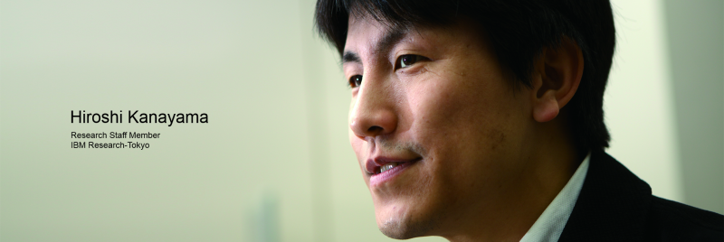

問われるのは意味を理解する力。
暗記だけでは解けない社会科科目
入 試問題の中でも社会科科目は、人間にとってはいわゆる暗記科目と呼ばれ、記憶が得意なコンピュータなら簡単に解けると思われるかもしれない。しかし、実際 に求められているのは丸暗記ではない。問題を解く上で重要な要素は、コンピュータが文章に書かれていることをどう理解するか、どう間違いを見つけ出すかに ある。その課題を克服する鍵となるのが、自然言語処理の「含意関係認識」と呼ばれる技術であるという。

コンピュータに
言葉の意味を理解させる
東ロボプロジェクトで取り組む入試問題の中でも、歴史・地理・現代社会・政治経済などの社会科科目は、記憶した知識が問われる暗記科目である。したがっ て、膨大なデータベースと検索技術さえあればコンピュータが楽に解けるのではないかと思ってしまう。しかし、現実はそれほど簡単ではない。
「例 えば、『江戸幕府の第三代将軍は誰？』というような問題であれば、単純にデータベースを検索すれば解けます。でも、入試問題はそうではありませんよね。セ ンター試験なら複数の文章から正しいものを選ぶ選択式です。その場合、選択肢と一字一句変わらない文章がデータベースの中にあれば、マッチングさせるだけ ですむけれど、実際には同じようなことが別の表現で書かれています。簡単な例で言えば、東京と東京都は同じなのか違うのか。そうした違いをコンピュータに 区別させるのは、実は簡単ではないのです」と、質問応答システム「Watson」の開発にも携わってきたIBM東京基礎研究所の金山博氏は指摘する。
その課題を克服する鍵となるのが、自然言語処理の含意関係認識技術であるという。それはどのような技術なのだろうか。東北大学大学院の渡邉陽太郎助教は次のように解説する。
「自然言語処理とは、簡単に言うとわれわれが日常的に使用している言葉をコンピュータに理解できるようにさせる技術です。そのままではコンピュータにとっ ては単なる文字列にすぎない文章を、単語に分割し、文の構造を解析し、構造化していくことによって意味をもたせるのです。含意関係認識はその中で、二つの 文の間に含意関係が成り立つかどうか、つまり表現が違っても同じことを意味しているのかどうかを判別する技術です」
含意関係認識技術を
進展させる
NTCIR RITE
含意関係認識とはすなわち、単語ではなく文章のレベルで、コンピュータが人間の言葉の意味を理解することをめざす技術と言える。より高度な自然言語処理を可能にするとして、近年注目されている分野である。
日本では、NIIが主催し、自然言語処理や情報アクセス技術の向上をめざす国際ワークショップ「NTCIR」の中で、含意関係認識に関するタスク 「RITE」が2011年から新たに設定された。RITEでは、参加チームがそれぞれ独自のアプローチを含意関係認識の評価データに適用し、その手法につ いて評価し合う。評価データはいくつかあるが、例えば、以下の2つの文章について、含意関係が成り立つかどうかを判定するといったものだ。
- t1 鎌倉幕府は1192年に始まったとされていたが、現在では実質的な成立は1185年とする説が支配的だ。
- t2 12世紀に日本では鎌倉幕府が開かれた
「私たち人間は、t1が成り立つとき、t2も成り立つことを容易に判断することができます。しかし、それをコンピュータに認識させるためには、まず『鎌 倉幕府（が）1185年（に）成立した』といった意味構造を正しく解析する必要があります。さらに、言葉に関する知識や世界に関する知識を活用することに よって、表現の違いを吸収したり常識的知識から推論できる情報を補ったりした上で、文の間の関係を推論しなければなりません。（図参照）」（渡邉助教）
そうしたプロセスにそれぞれ異なる手法を適用し、互いに比較、評価し合うRITEには、含意関係認識技術の進展を加速させることが期待されている。
「私の場合は、これまで研究してきた数学の知見も取り入れた論理的な推論というアプローチで、RITEで好成績をあげることができました。ただ、論理性を 持ち込む上での難しさは、自然言語がもつ表現の多様性です。二つの文章の意味が根本的に違うのか、単に表現の違いなのか、コンピュータにそれを判断させる のは非常に難しい反面、面白いポイントでもあります」と、RITEに参加しているNIIの田然特任研究員は語る。
人間の知の世界を
深めていく
こうしたNTCIR RITEの成果を試すことができる題材の一つが、東ロボにおける社会科科目問題だ。第一段階の目標となっているセンター試験で求められるのは、問題文の意 味を理解し、複数ある選択肢の文章の正誤を判定すること。それは、教科書やWikipediaなどの知識源の記述と選択肢の意味が一致するかどうかを探 り、推論する、含意関係認識の手法によって実現できる。現在、最先端の含意関係認識技術によって、センター試験の中でも知識を問う問題の正答率は5割を超 えるという。ただ、まだまだ解けない問題も多く、認識精度の向上をめざしている。
もっとも、目標を実現する道は一つとは限らない。
「含意関係認識とは別の方法として、クイズ形式の問題に答えることができるWatsonのシステムに、センター試験の世界史の正誤問題を英訳したものを解 かせる実験をしました。正しいかどうかを判定したい文の中にあるキーワードが嘘かもしれないと疑ってみて、その部分が何かを問う問題を作ってコンピュータ に解かせると、試験問題を通じてどんな知識を確認しようとしているかが浮き上がってくることがあるのです」（金山氏）大学入試問題は、含意関係認識などの 自然言語処理技術にとっての大きな通過目標であるが、もちろんそれが到達点ではない。そのチャレンジの中から、私たちの社会生活をよりよくするさまざまな 技術が生まれることが期待されている。
「大量のデータから知識を生み出すことで、人間の知的活動をサポートする技術を実現したい」（金山氏）、 「ウェブ上にある膨大かつ混沌とした情報を目的に合わせて整理したり、真偽判定を助けたりするシステムに結びつけていきたい」（渡邉助教）、「最終的には 人間の思考プロセスをコンピュータで実現できるようにしたい」（田特任研究員）と、めざす目標はそれぞれだが、この分野が進展し、コンピュータによる自然 言語理解が深まることが、私たち人間の知の世界をいっそう深化させていくのは間違いないだろう。
（取材・文＝関亜希子）